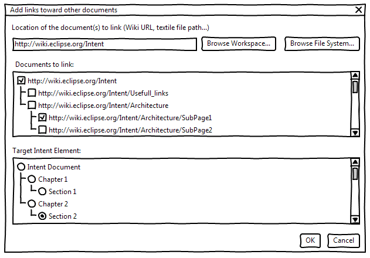
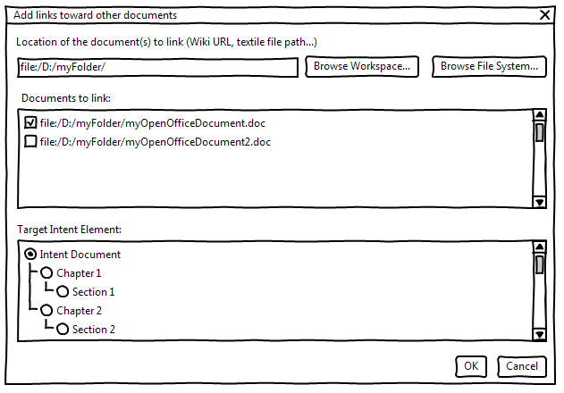
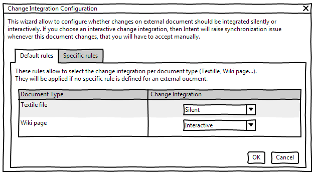
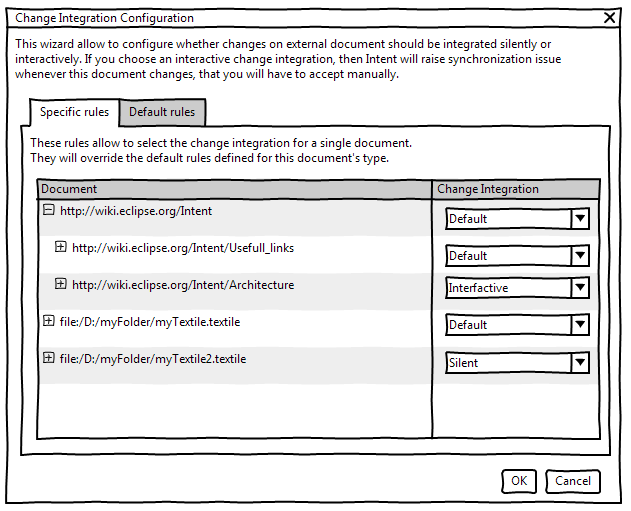
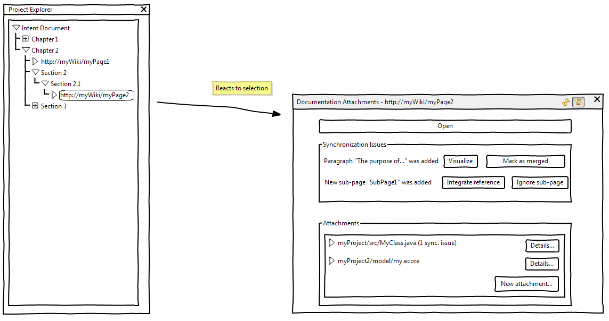
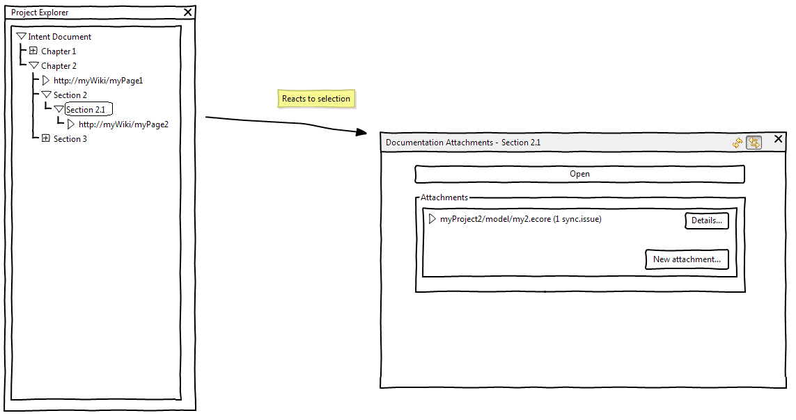
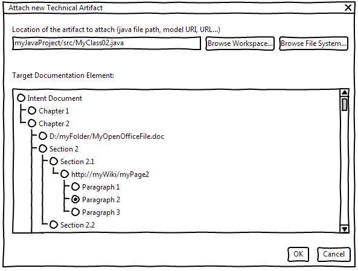
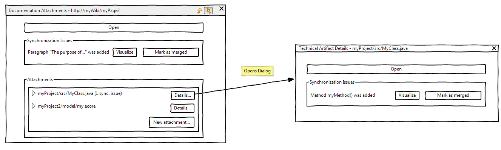

For the time being, the only way to type Intent documentation is through the Intent editor.
However, synchronization and authoring capabilities of Intent are 2 distinct features.
It makes perfect sense to only use the synchronization capabilities of Intent, and rely on other formats to author and store the documentation (Textile files, Wiki pages, Open-office documents...).
This document specifies how Intent should handle such external documentation files.
Before detailing the end-user scenario, we must define the following concepts.
A piece of documentation which is not stored inside an Intent repository (can be a textile file in the workspace, a Wiki page, an open-office document...).
We will distinguish 2 kinds of link from the Intent document to an external document : Full Links and Ref Links.
Such links will be displayed in the Project explorer (contrary to other instructions). This will ease operations on these links (Drag and Drop of technical artifacts, link with the Documentation Attachments View ...).
A ref link is composed of a simple URI indicating the external document location (e.g. http://my.Wiki.org/myWikiPage, platform:/resource/myProject/myTextileFile.textile, file:///PATH_ON_DISK/myOpenOfficeDocument.doc). It will also contain a list of technical artifacts related to this external document.
It will be used for external document that we cannot represent as EMF Models (see Full Links definition ).
A Full link is a Ref link containing the content of the referenced external document as an instance of the Markup metamodel.
For instance, the default markup parser already allows to represent any textile file as an instance of the Markup metamodel. So if we reference a textile file as an external document , Intent will be able to parse the document and store it as an EMF model.
Notice that here it will not contain a list but a map of technical artifacts, associating each precise piece of documentation in the external document (e.g. a Wikitext section or a Wiki paragraph/image) with a set of technical artifacts.
As the documentation is no longer exclusively stored in the Intent repository and authored through the Intent editor, the question of the synchronization between Intent documentation and external document is raised.
As Intent has no information about the content of these documents, modifying them will not raise any synchronization issue.
As Intent stores the content of such document, we have 2 possible way of handling a modification on them: Automatic Change Integration and Interactive Change Integration .
As each mode brings benefits and drawbacks according to the use case, it should be possible for the end-user to configure the chosen mode file-by-file or file type-by-file type.
In that mode, whenever an external file is modified, we silently apply the changes on the corresponding EMF copy.
In that mode, whenever an external file is modified, we raise a synchronization issue indicating that the document has changed. As with a technical artifact-related synchronization issue, changes can be visualized graphically using EMF Compare dialogs. The end-user will have to accept manually the change to update the EMF copy .
We will follow step-by-step a scenario in which the end-user wants to use 2 different Wikis (each containing several pages) and an Open-office file as external documents,and still using Intent for some sections.
The Intent project is created as usual.
As a documentation writer
I want to reference a Wiki page in my documentation
So that I can link this Wiki page with technical artifacts
Given an empty Intent project and a Wiki page
When
Then
Notice that the end-user will be notified if a new sub-page is added to the referenced Wiki page (see the corresponding scenario ).
As a documentation writer
I want to reference many pages from a Wiki in my documentation
So that I can link these Wiki pages with technical artifacts
Given an empty Intent project and a list of Wiki pages I want to reference
When
Then

As a documentation writer
I want to reference an Open Office document in my documentation
So that I can link this Open Office document with technical artifacts
Given an empty Intent project and an Open Office document
When
Then
As a documentation writer
I want to reference many Open Office documents in my documentation
So that I can link theseOpen Office documents with technical artifacts
Given an empty Intent project and a list of Open Office documents I want to reference
When
Then

For any external document referenced through a Full link , the end-user will be able to change the change integration mode (whether Automatic or Interactive ).
The change integration can be configured for each link type, and/or per external document link.
This can be done by:
This change integration Wizard allows to define the Default rules (per document type):

And specific rules (per document):

As a documentation writer
I want to configure the way changes on Wiki file are integrated
So that I do not have synchronization issues when modifying them (changes are automatically integrated)
Given an Intent document referencing (through Full links several Wiki pages
When
Then
Notice that this could be done through the Change Integration Wizard":#ChangeIntegrationWizard ("Specific Rules" tab).
As a documentation writer
I want to configure the way changes on a specific Wiki file («Architectural overview» on Intent Wiki) are integrated
So that I have synchronization issues when modifying this page (changes are NOT automatically integrated)
Given an Intent document referencing (through Full links a page on Intent Wiki («Architectural overview»)
When
Then
Whenever an external documentation is updated, 3 cases can occur:
Adding a new sub-document to an external document referenced through a Full link (typically, a new sub-page in a Wiki) is not considered as a minor document notification, as the content cannot be directly merged in the existing full link.
As a documentation writer
I want to be notified when new sup-pages are created on a referenced Wiki page
So that I can decide whether to create a link for this page or not
Given an Intent document referencing (through Full links a page on Intent Wiki (e.g. «Architectural overview»)
When
Then
A deletion is handled as any synchronization issue. However, the "Mark as merged" quickfix will be replaced by "Delete this reference" and will delete the @ref instruction.
As a documentation writer
I want to link an external document with a technical artifact (e.g. a java method)
So that I get synchronization issues on this external document when the artifact changes
Given an Intent document referencing (through Full links a page on Intent Wiki (e.g. «Architectural overview») and a java file containing a method
When
OR
OR
Then
This view reacts to any selection of an IntentStructuredElement (through the Intent Editor or the Project Explorer) or an external link (also displayed in the project explorer) by listing the associated technical artifacts, and all the documentation-releated synchronization issues (only in the case of a Full link with Interactive Change integration ).
When selecting some element (here an external link) in the project explorer, the view is updated (whether automatically if «link with selection» is enabled, or manually by clicking on "Refresh), and allows to:

Notice that this view has the same behavior for Intent structured elements:

This dialog allows to link a technical artifact with an Intent Structured Element or an external document (or, in case of a Full link , a precise sub-part of an external document).

From the Documentation Attachments View , when selecting an attached technical artifact and clicking of the "Details" button, the following dialog is opened:

It allows to:
The Intent synchronization mechanism will work exactly as usual: when detecting changes on the referenced technical artifacts, it will create synchronization issue markers on the @ref instructions contained in the link map. We will add an additional "Open Corresponding document" quickfix that will open the target external document (and in case of a full link select the proper location).
But this standard mechanism can become hard to use when dealing with several documents and several synchronization issues.
That is why we provided 2 additional ways of seeing and fixing these synchronization issues:
An Intent document containing references to external documents will be exported as a standard Intent document, with the following rules: